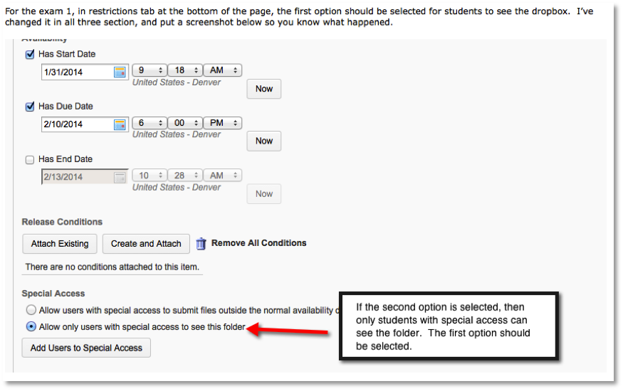

I create mini-tutorials or information guides for instructors about specific topics. As new instructors learn how to use the learning management system and different technologies for their courses, and returning instructors expand their skills, the mini-tutorials give them information so they can complete tasks in their courses. Below are several mini-tutorials for an instructor who is learning how to use our learning management system.Â
